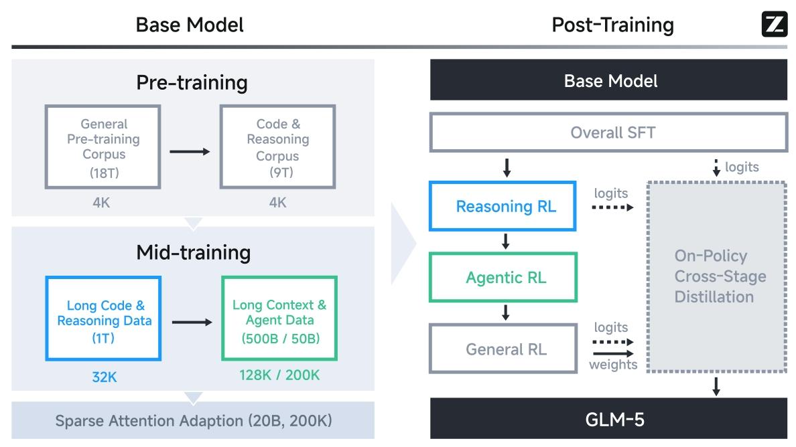
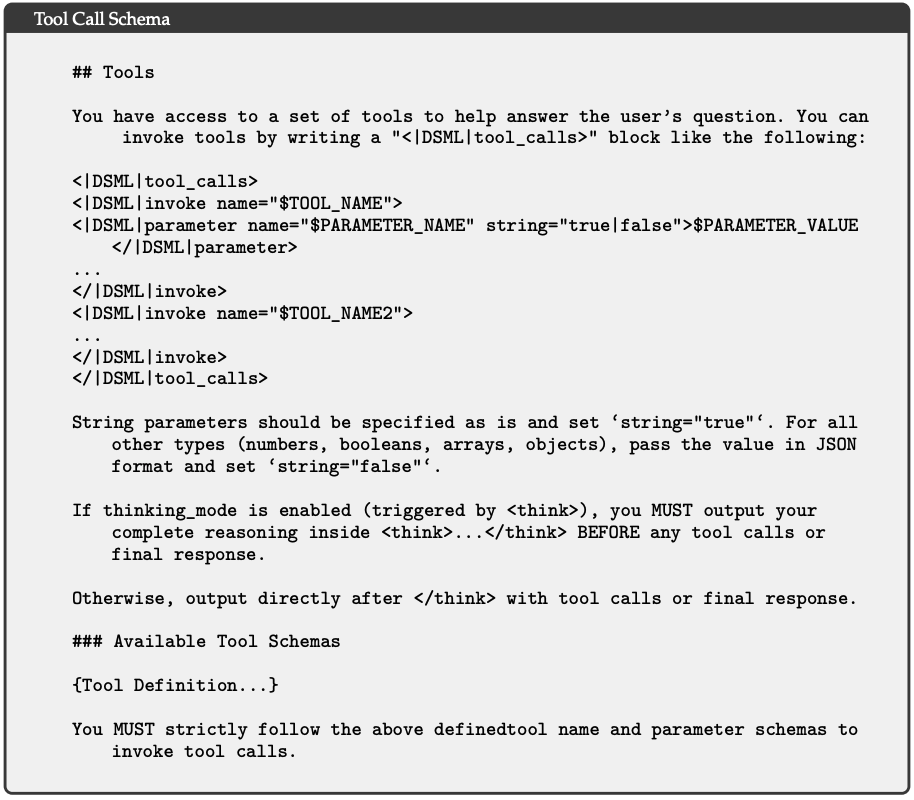
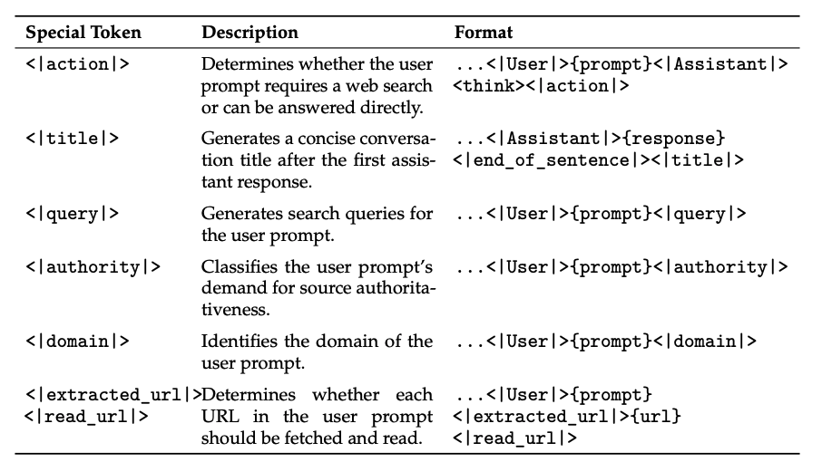
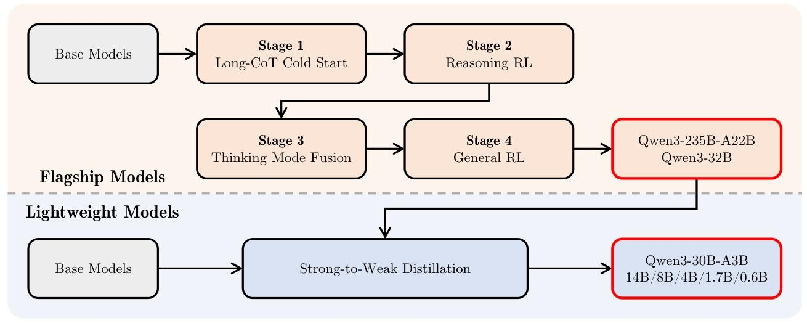

主流大模型是如何训练agent能力的
主流大模型是如何训练agent能力的
本博客只讨论了对于小参数通用agent模型训练可能会有启发的内容。原生多模态，百万上下文（与此相关的大同小异的稀疏注意力），coding agent能力相关内容没有列出。
GLM5.2
参考：https://z\.ai/blog/glm\-5\.2
1. 长周期任务 RL：从 group-wise 优化转向 critic-based PPO
这一段是最重要的：
RL for Long-Horizon Tasks. For GLM-5.2, long-horizon tasks produce substantially longer execution traces, and once a super-long trajectory is split by compaction into multiple sub-traces, different rollouts under the same prompt yield different numbers of trainable traces with highly variable lengths. We therefore move from group-wise optimization to a critic-based PPO formulation that learns from individual rollouts, relying on a critic to estimate token-level advantages rather than group-relative comparisons. This single-rollout formulation fits compaction naturally, as it places no constraint on how many traces a prompt produces or on their relative lengths: we bring compaction into training by including all compacted sub-traces as trainable trajectories, and apply a token-level loss to address their length imbalance.
长周期任务会产生很长的执行轨迹。经过 compaction 后，一条超长轨迹可能被切成多个子轨迹，不同 rollout 产生的可训练 trace 数量和长度也会不同。传统 group-wise optimization 对这种情况不友好。ppo这种单轨迹采样方案能够天然适配压缩处理，原因在于该方案不会对单个提示词生成的轨迹数量以及各轨迹之间的相对长度做出任何限制：我们将所有经过压缩处理的子轨迹作为可训练轨迹纳入训练流程，并采用token级损失函数来解决轨迹长度不均衡的问题。
GLM-5.2 改用 critic-based PPO：
以单条 rollout 为学习单位；
通过 critic 估计 token-level advantages；
不要求同一 prompt 下的不同 trace 数量或长度一致；
将 compacted sub-traces 全部纳入可训练轨迹；
使用 token-level loss 处理长度不均衡。
这是一项面向真实 agent 长轨迹的 RL 训练改造。
为什么数量、长度不同的trace对grpo不友好？比较的粒度不统一。
slime中如果一个超长轨迹压缩后形成数量不等的子轨迹，会在所有n_samples_per_prompt * rollout_batch_size整批中比较，slime中的相关代码：
1 | def **_post_process_rewards**(*self*, *samples*: list[Sample] | list[list[Sample]]): |
2. Anti-hack：防止 coding RL 奖励黑客
这一点在qwen3.7的博客中也有提到
编程任务的 reward 往往是可验证的 pass/fail 信号，因此模型可能学会“刷奖励”而不是真正解决问题。文中列出的作弊方式包括：
读取隐藏测试或评测文件；
从 reference、上游 commit 或 GitHub 直接复制答案；
使用 curl 等方式拉取目标源代码或解法；
串联读取 secret cases 后直接构造输出。
GLM-5.2 引入 anti-hack module，用于 RL 训练和评测：
第一阶段用规则过滤器高召回地标记可疑行为；
第二阶段用 LLM judge 判断意图，提高精确率；
在线监控每一步 tool call；
发现 hack 后阻断该调用，并返回 dummy information；
不直接终止整条 rollout，而是允许模型继续执行。
这种设计避免了作弊轨迹污染训练信号，同时减少因直接中断 rollout 带来的训练不稳定和模型崩溃风险。
GLM5的后训练流程（5.1、5.2的博客并没有介绍训练流程）
参考：https://arxiv\.org/abs/2602\.15763

Overall SFT → Reasoning RL（第一段） → Agentic RL（第二段） → General RL（第三段） → On-Policy Cross-Stage Distillation（OPD，独立最终阶段）
多轮 RL 训练容易出现 “学会写代码但聊天变笨”，最后一步蒸馏兜底：
将 SFT、推理 RL、智能体 RL 阶段的旧模型全部作为教师模型；
训练时混合各阶段任务数据，让 GLM-5 主模型复刻之前所有能力；
Deepseek V4
参考：https://arxiv\.org/abs/2606\.19348
1.后训练流程：各领域独立微调+强化学习（GRPO），随后OPD整合能力
$\mathcal{L}{\mathrm{OPD}}(\theta)=\sum{i=1}^{N} wi \cdot D{\mathrm{KL}}!\left(\pi\theta \,|\, \pi{E_i}\right).$
wi代表每位专家的权重，通常由专家的相对重要性决定。计算反KL损失DKL（ πθ∥πEi）需要从学生πθ中抽样训练轨迹以保持策略学习。底层逻辑确保统一策略πθ选择性地从当前任务上下文相关的专业专家处学习（例如，数学推理任务与数学专家对齐，编程任务与编程专家对齐）。通过这种机制，来自物理上不同的专家权重知识通过logits级对齐整合到统一的参数空间中，实际上规避了传统权重合并或混合强化学习技术中常见的性能下降。在此阶段，采用十多种涵盖不同领域的教师模型（数学、代码编程、Agent 工具调用、通用指令对齐...），以提炼出单一学生模型。
2.优化器
绝大部分 2D 权重矩阵（MoE 专家、注意力层、CSA/HCA、mHC 主体矩阵等）用 Muon；仅少量特殊模块固定 AdamW：词嵌入层、预测头、所有 RMSNorm 权重、mHC 静态偏置与门控参数。
即使不考虑训练速度，Muon（或者 Muon + AdamW 混合优化器）训练出的模型在泛化能力、长尾知识记忆和曲率稳定性上的上限，依然要强于纯 AdamW。AdamW 所谓的“更细更新粒度”在大尺度矩阵优化上，很多时候反而成了导致局部过拟合和长尾学习停滞的“副作用”。
但是需要注意他们做了一些定制化的改造：通用改造：两段 Newton-Schulz 迭代、混合 ZeRO 分布式兼容、BF16 梯度通信、取消 QK 裁剪；后训练独有 Muon 配套改动：FP4 量化感知训练联动、蒸馏阶段权重按需加载、百万上下文并行梯度重计算。
3.生产级的沙箱环境
分布式生产级真实操作系统沙盒集群，数十万并发，带完整容错、隔离、集群调度，既用于Agentic训练也用于评测。
关于模拟环境，qwen最近的新工作也可以参考：https://mp\.weixin\.qq\.com/s/NV9WGpGsfFz35jww5agM9g
4.生成式奖励模型
易于验证的任务可借助简单的基于规则的验证器或测试用例实现高效优化。难以验证的任务传统上依赖基于人类反馈的强化学习（RLHF），该方式需要大量人工标注来训练标量奖励模型。dpsk v4摒弃了这类传统基于标量的奖励模型。与之不同，针对难以核验的任务，我们整理构建了评分准则引导的强化学习数据集，并采用生成式奖励模型（GRM）对策略轨迹进行评估。关键在于，我们直接对生成式奖励模型（GRM）本身开展强化学习优化。在该框架下，策略网络原生充当生成式奖励模型，能够在优化模型常规生成能力的同时，联合优化模型的评估（判别）能力。通过整合上述两类功能，模型的内部推理能力会自然融入评估流程，进而得到稳定性极强的打分结果。除此之外，该方法仅需少量多样化人工标注数据就能取得更优效果，原因是模型可依托自身逻辑在各类复杂任务上完成泛化适配。
5.工具调用

基于 XML 格式实现工具调用，实验结果表明，XML 格式能够有效规避转义异常问题、降低工具调用出错概率，为模型与工具之间的交互提供稳定性更强的交互接口。（开始标签、结束标签清楚，而json的括号嵌套更容易出错）
工具调用场景留存全部轮次的完整推理历史，跨用户消息分段也不例外。这使得该模型在长时序智能体任务中能够维持连贯、递进式的思维链路。通用对话：当用户发送新消息时，会舍弃之前轮次的推理内容，以此精简上下文，适用于持续保留推理轨迹收益有限的场景。
6.主模型同样包揽辅助任务

由于技术报告中只有一小段，线上服务的代码也未开源，工作流程包含推测：整体串行，部分并行（生成搜索关键词、判断信息权威性等级、识别问题所属领域等）。
1 | task = *messages*[*index*].get("task") |
1 | [ |
推测：用户开启了智能搜索功能，会插入”task”: “action”，先判断要不要搜索，其它辅助任务适当并行，主任务生成回答后，生成标题。
技术报告中没有提怎么训练，推测是在agent相关的专家模型中进行训练的（微调、rl），或者单独训一个专家，甚至在sft阶段就已经加入相关数据。
最大的好处就是可以复用kv cache。
Qwen3.7
参考：https://qwen\.ai/blog?id=qwen3\.7
技术报告待发布
智能体扩展
在 Qwen3.5 中引入的环境扩展方法基础上，Qwen3.7 进一步大幅扩展了智能体训练环境的质量与多样性。正如语言模型从多样化的预训练文本中获得泛化能力，我们发现智能体能力同样可以从多样化的训练环境中实现泛化。
如下图所示，这种环境扩展带来了清晰且稳定的性能提升轨迹，Qwen3.7-Max 在综合排名中位列前三，接近 Claude-4.6-Opus-Max 的水平。值得注意的是，我们评测中所有基准测试所涉及的环境均为训练中从未出现过的全新领域外环境。
我们还观察到扩展行为中一个显著的可预测性：任意基准子集上的性能增益高度一致，可以可靠地预测其余基准或整体平均值的相对增益，表明环境扩展驱动的是真正的能力泛化，而非针对特定基准的提升。关于扩展动态和方法论的进一步分析将在即将发布的技术报告中详细介绍。
qwen3.5中的基础设施：https://qwen\.ai/blog?id=qwen3\.5
在视觉与语言组件上解耦并行策略，利用稀疏激活实现跨模块计算重叠，原生 FP8 流水线对激活、MoE 路由与 GEMM 运算采用低精度，并通过运行时监控在敏感层保持 BF16。
可扩展的异步强化学习框架，全面覆盖文本、多模态及多轮交互场景。通过训推分离架构的解耦式设计，提升硬件利用率，实现动态负载均衡和细粒度的故障恢复。配合 FP8 训推、Rollout 路由回放、投机采样以及多轮 Rollout 锁定等技术，进一步优化了系统吞吐，提高了训推一致性。在严格控制样本陈旧性的基础上有效缓解了数据长尾问题，提高了训练曲线的稳定性和性能上限。此外，框架面向原生智能体工作流设计，能够实现稳定、无缝的多轮环境交互，消除了框架层的调度中断。这种解耦设计使得系统能够扩展百万级规模的 Agent 脚手架与环境，从而显著增强模型的泛化能力。

跨框架泛化能力
Rollout 环境基础设施将每个训练实例解耦为三个正交组件——任务（Task）、运行框架（Harness）与验证器（Verifier），这些组件可自由重组。兼容多种运行框架及其迭代版本，并将环境立足于真实场景而非合成替代品。这种解耦设计实现了组合式扩展：同一任务能以极低的边际成本，与不同类型、不同版本的框架及验证器相匹配。更关键的是，它赋能了跨框架与跨验证器的强化学习（RL）训练——使模型在多变的框架配置下处理同源任务，从而迫使其学习具备泛化能力的解题策略，而非依赖特定框架的捷径。
此外还提到了用于RL训练中的反奖励作弊
qwen3的训练流程（已经是一年前的了，但后续没有技术报告或博客说明训练流程）

路线 1：旗舰大模型——4 步精细微调
阶段 1：长思维冷启动 收集海量奥数、代码、逻辑难题，强制 AI 学习完整分步推理，先打好 “会思考” 底子。
阶段 2：推理强化学习（RL） 只用难题训练，用打分机制让 AI 不断优化解题思路
阶段 3：双模式融合 同时喂 “深度思考” 和 “快速回答” 两类数据，让同一个模型学会两种工作方式，支持指令切换模式。
阶段 4：通用全场景强化学习 覆盖写作、工具调用、翻译、长文档、人机对话 20 多种场景，修复幻觉、规范格式、提升对话自然度。
路线 2：轻量小模型（0.6B~30B MoE）—— 强到弱蒸馏
不用重复走上面 4 步完整训练，直接用 超大号 “老师模型” 带小模型，分两步蒸馏：
离线蒸馏：拿老师思考 / 不思考两种回答喂给小模型打底；
在线蒸馏：小模型自己做题，再对齐大模型的思路。 （最早在技术报告中提到opd的）
Kimi K2.5（2.6、2.7几乎没有技术细节）
参考：https://arxiv\.org/abs/2602\.02276
后训练：SFT+RL，主要侧重多模态数据的训练，然后Agent Swarm 并行智能体 PARL 强化学习。RL用的是PPO变体。
多任务专属奖励函数
文字推理：规则化可验证答案奖励
图像任务：IoU 分割、高斯距离计数、编辑距离 OCR 奖励
通用对话：生成奖励模型 GRM，精细评估有用性、格式、逻辑完整度
专项训练：Agent Swarm 并行智能体 PARL 强化学习
前面是基础图文 + 通用工具能力，这一步专门训练 AI “组队并行干活”，是 K2.5 独有流程
模型架构拆分训练
协调器 Orchestrator：唯一可训练模块，负责拆任务、创建子 AI、分配工作、汇总结果
所有子智能体 Sub-agent：全程冻结不更新，避免多智能体联合训练不稳定、责任混淆问题
三元复合奖励函数（平衡并行、完成度、最终质量）
rPARL=λ1⋅rparallel+λ2⋅rfinish+rperf
rparallel：鼓励创建子 AI，防止模型只会串行单干（串行塌陷）
rfinish：惩罚乱建无效子 AI，要求子任务必须有实质产出（虚假并行）
rperf：最终任务正确率、完整度主奖励
训练后期 λ1、λ2 逐步衰减，让模型优先追求结果质量
训练约束：关键步数（Critical Steps）
不统计总执行步数，只算并行分支最长耗时那条路径，倒逼模型合理拆分任务，真正缩短耗时，而不是无脑堆子 AI
Long Cat2.0
参考：https://longcat\.chat/blog/longcat\-2\.0/
依然是熟悉的多教师同策略蒸馏，专家训练应该也是sft+rl。